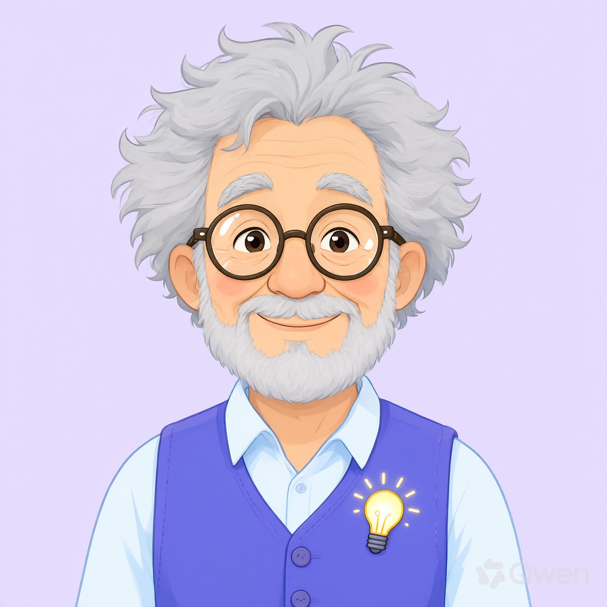

Подумай и выбери ответ. Ошибка — это подсказка: можно попробовать ещё раз.

Привет, юный мыслитель! Сегодня мы узнаем четыре правила, которые помогают мыслям быть точными, последовательными и убедительными.
УРОК 7 · КОМАНДА ЯСНОЙ МЫСЛИ
Четыре правила ясной мысли
Не путай слова, замечай настоящие противоречия, выбирай между точными «да» и «нет» и подкрепляй ответы хорошими причинами.
← Вернуться к выбору уроковФИНАЛЬНОЕ ИСПЫТАНИЕ
Совет четырёх законов
Задание 1 из 12⭐ 0
После ответа прочитай объяснение — оно поможет запомнить правило.
ПАУЗА ДЛЯ РАЗМЫШЛЕНИЯ
Детективу нужна ещё одна улика!
Памятка ясного мыслителя
- Тождества: в одном разговоре используй важное слово в одном и том же смысле. Если слово может значить разное — уточни его.
- Противоречия: два несовместимых ответа не могут быть оба верны, если говорят об одном предмете, времени и условии. Но иногда оба могут быть неверны: мяч может быть серым — не белым и не чёрным.
- Исключённого третьего: у точного высказывания и его отрицания нет третьего ответа. Например, эта карточка сейчас лежит на столе — или не лежит. Мы можем пока не знать ответ, но это не меняет двух возможностей.
- Достаточного основания: важное утверждение подкрепляй подходящими фактами, наблюдением или надёжным правилом. «Я так думаю» — ещё не доказательство.
- Логические правила помогают рассуждать, но сами по себе не сообщают, какой ответ верен: факты нужно проверить.
МИССИЯ ВЫПОЛНЕНА
Хранитель ясных мыслей!
Ты знаешь четыре правила: будь точным, не путай несовместимые мысли, проверяй точные «да/нет» и ищи хорошие основания.